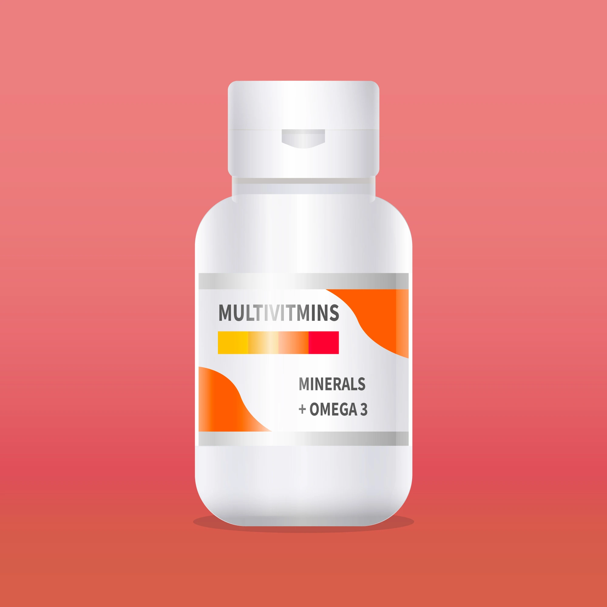

Medicine
Your health is our priority. Browse our selection of medicines and health products.
Find trusted brands and essential healthcare items to keep you and your family well.
medicine info
Medicines are substances used to diagnose, treat, or prevent diseases and medical conditions. They can come in various forms, including tablets, capsules, liquids, creams, and injections. Medicines work by interacting with the body's biological systems to restore health or alleviate symptoms. It is important to use medicines as prescribed by healthcare professionals to ensure their effectiveness and minimize potential side effects.

Capsule
Capsules are a type of medication delivery system that encases the active ingredients in a gelatin or vegetarian shell. They are designed to be easy to swallow and can contain powders, liquids, or granules. Capsules can provide a controlled release of medication, allowing for better absorption in the body. They are commonly used for a wide range of medications, including vitamins, supplements, and prescription drugs.

Multivitamins
Multivitamins are dietary supplements that contain a combination of vitamins and minerals. They are designed to provide essential nutrients that may be missing or insufficient in a person's diet. Multivitamins can help support overall health and well-being, especially for individuals with specific dietary needs or those who have difficulty obtaining all necessary nutrients from food alone.
